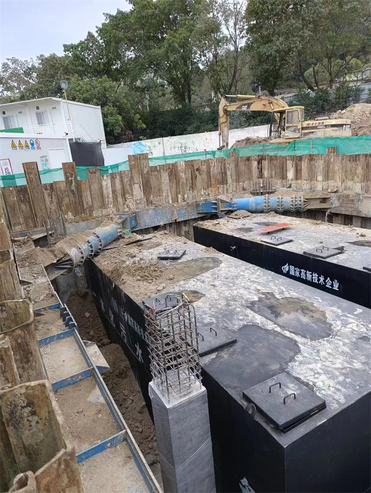
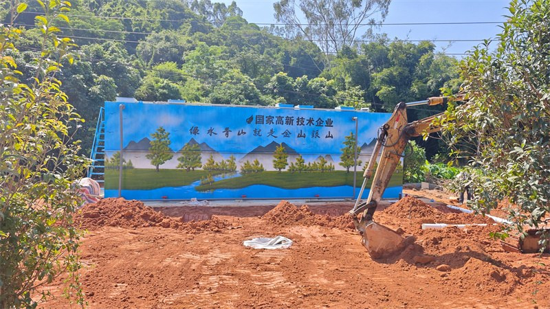
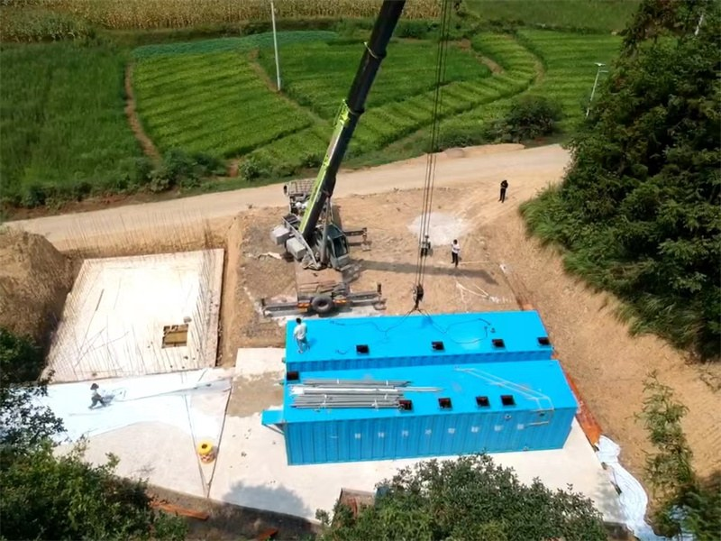
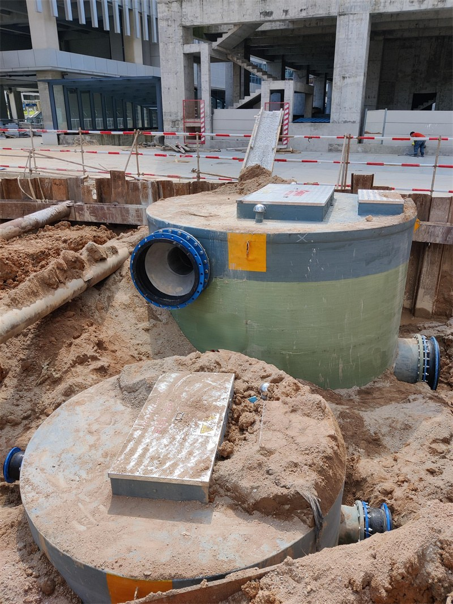
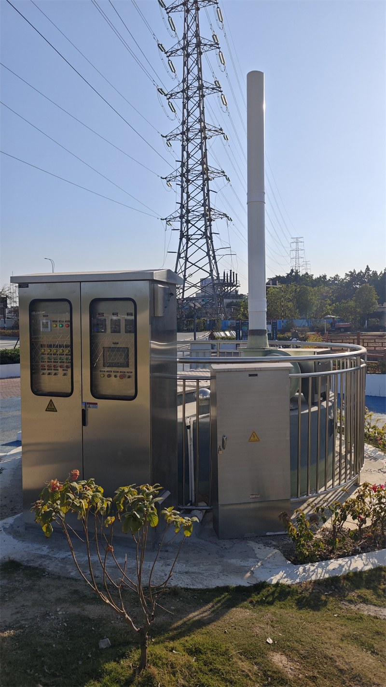
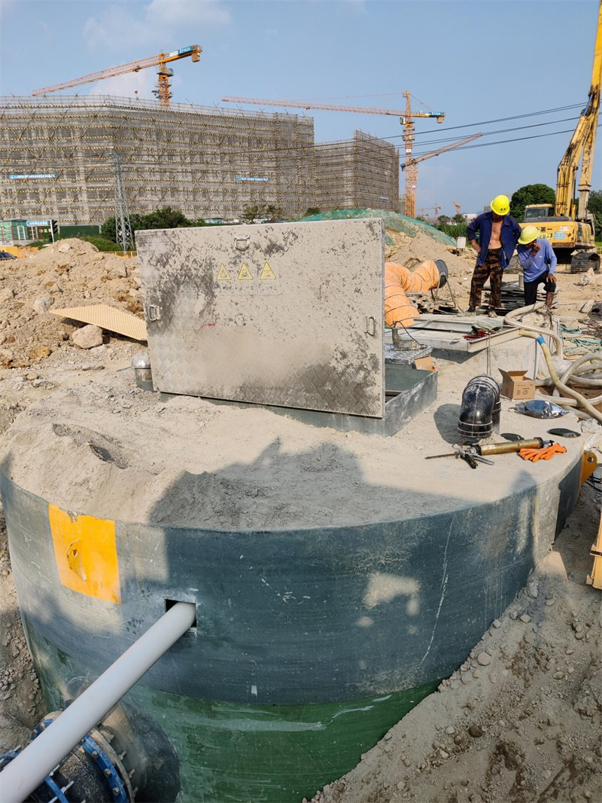
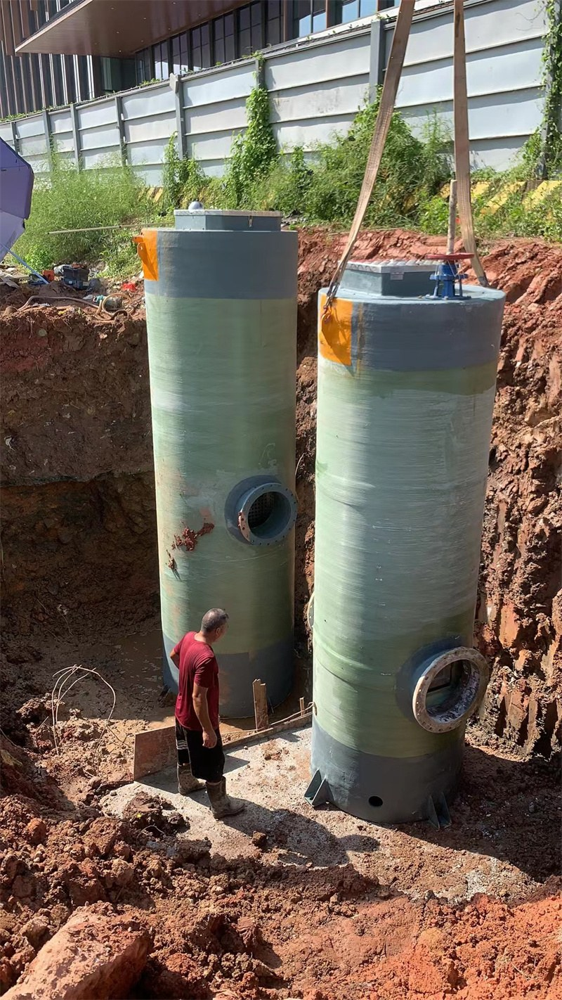
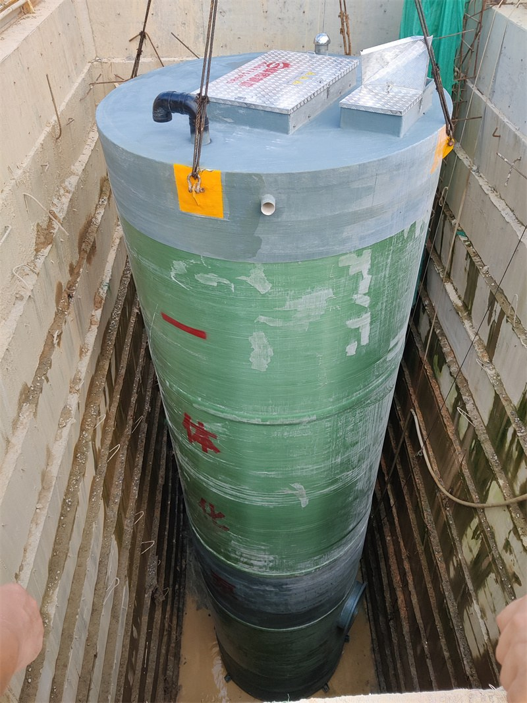

GUWEIENVIRONMENTAL
GUWEIENVIRONMENTALMunicipal Wastewater Treatment Plant, Phase III
Phase III of a municipal wastewater treatment plant, with a project capacity of 60,000 m³/d.
Explore municipal and food processing wastewater projects, including capacities and site photographs.
Phase III of a municipal wastewater treatment plant, with a project capacity of 60,000 m³/d.
A slaughterhouse wastewater treatment project at a food processing facility in the Greater Bay Area, with a project capacity of 4,000 m³/d.
Equipment layout and installation photographs.





Chamber lifting and installation photographs.







Share the project type, capacity and contact details so we can discuss your technical requirements.
Online enquiries are not currently available. Please contact us by phone. 18026396076